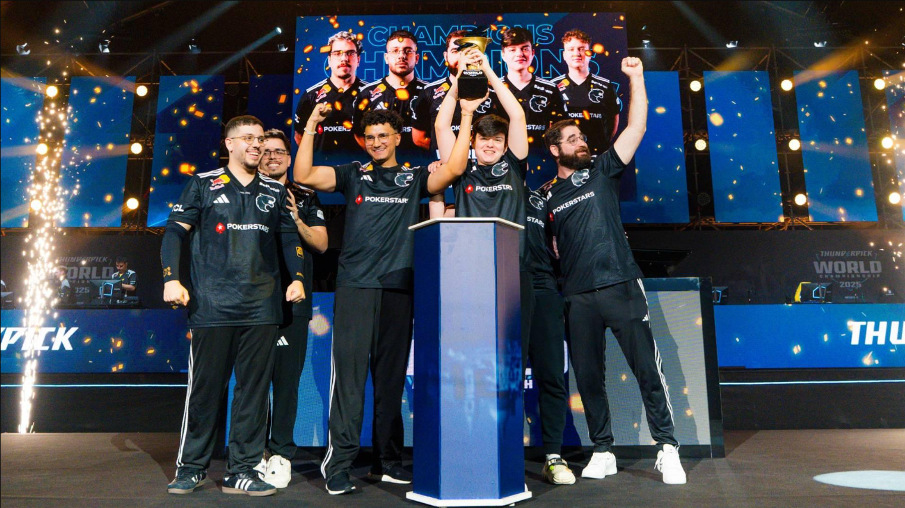

| Campeonato | Local | Ano |
|---|---|---|
| FISSURE Playground 2 | Belgrado - Sérvia | 2025 |
| Thunderpick World Championship | Malta | 2025 |
| Intel Extreme Masters Chengdu | Chengdu - China | 2025 |
Campeã: FURIA
Adversário: Team Spirit
Resultado: FURIA 3 x 0 Team Spirit
Data: 15 de novembro de 2026
Local: Hong Kong
A FURIA conquistou o bicampeonato da BLAST Rivals após uma grande vitória sobre a Team Spirit. Com uma atuação dominante, a equipe brasileira venceu a final por 3 mapas a 0 e levantou mais um importante troféu internacional.

Confira as principais jogadas da Grande Final.